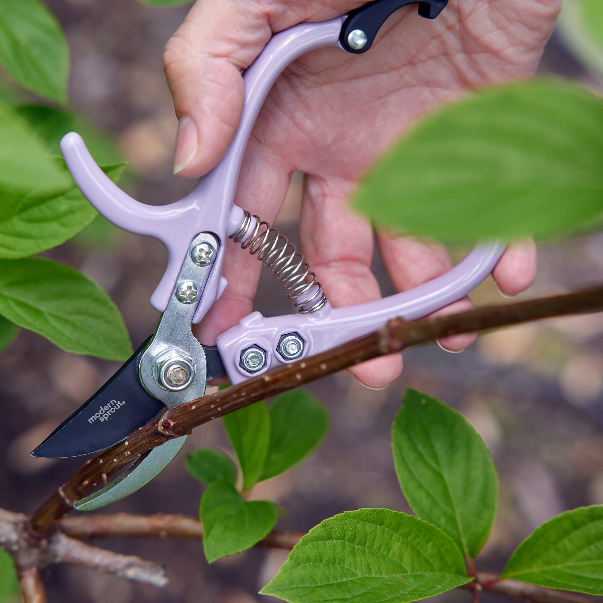

מזמרה
מתאימה לגיזום ענפים דקים ועיצוב הצמח בצורה נקייה.
כאן תוכלו למצוא כלי עבודה שימושיים לגינה ולמרפסת.
מתאימה לגיזום ענפים דקים ועיצוב הצמח בצורה נקייה.
שומרות על הידיים בזמן עבודה עם אדמה, קוצים וצמחים.

מעולה לשתילה, העברת אדמה וסידור ערוגות.

מסייעת לאוורור אדמה ולסידור סביב הצמח בעציץ.

נוחה לשתילה בעציצים, העברת אדמה ועבודה מדויקת.

מתאים לעישוב קל, פירור אדמה וסידור סביב הצמח.

עוזר לאוורר את האדמה ולערבב קומפוסט או חיפוי.

מתאימים לגיזום עלים וגבעולים ולתחזוקה שוטפת.

כלי יעיל לענפים עבים יותר ולגיזום נקי ובטוח.

מאפשר חיתוך ענפים עבים יותר עם פחות מאמץ.
השקיה מדויקת לעציצים ולפינות קטנות בלי להשפריץ.

מתאים לריסוס עדין של מים ולטיפול נקודתי לפי צורך.

עוזר להשקיה נוחה במרפסת ובגינה, לפי אורך הצורך.

מאפשר שליטה בזרם המים והשקיה נוחה ומדויקת.

מעולה לאיסוף עלים, ניקוי שטח וסידור אדמה בגינה.

לשמירה על שבילים ומשטחים נקיים מעלים ולכלוך.

שימושי להעברת אדמה, קומפוסט, גזם וכלי עבודה.

מקל על עבודה נמוכה ומגן על הברכיים בזמן שתילה.
עוזר לשמור סדר ולאחסן כלי גינון במקום אחד.

מאפשרת מינון נוח ומדויק של דשן או תערובות שתילה.
לא נמצאו תוצאות. נסו מילה אחרת 🙂